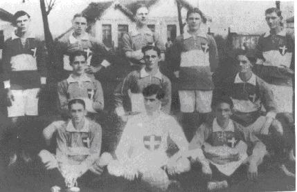

Nossa história
A História da Sociedade Esportiva Palmeiras começa no dia 26 de agosto de 1914, quando o clube foi fundado por imigrantes italianos na cidade de São Paulo com o nome de Palestra Italia. A primeira partida da equipe foi disputada em 24 de janeiro de 1915 contra o Savóia, do atual município de Votorantim, à época distrito de Sorocaba, no interior paulista, e contou com a vitória palestrina por 2 a 0, com gols de Bianco e Alegretti. Depois de colecionar nas décadas de 20 e 30 do Século XX uma série de títulos paulistas e conquistar uma quantidade relevante de torcedores, o clube foi obrigado[28] a mudar seu nome para Sociedade Esportiva Palmeiras em 1942, por ocasião da Segunda Guerra Mundial, já que o Brasil, governado pelo então presidente Getúlio Vargas, declarou guerra aos países do "Eixo" (Alemanha, Itália e Japão) e se alinhou aos países "Aliados", (Estados Unidos, União Soviética, Reino Unido, França, e outros). Na sua primeira partida com o novo nome de Palmeiras, em 20 de setembro de 1942, sagrou-se campeão paulista com uma vitória sobre o São Paulo no Estádio do Pacaembu, no episódio histórico que ficou conhecido como "Arrancada Heroica". Nas décadas seguintes, com grandes jogadores, como Oberdan Cattani, Waldemar Fiúme, Villadoniga, Jair Rosa Pinto, Liminha e Rodrigues, ampliou seu acervo de títulos e se consolidou com uma das equipes mais importantes do Brasil. Na virada da primeira para a segunda metade do século, o alviverde atingiu um grande momento, conquistando seu primeiro e um dos mais importantes títulos internacionais. O clube paulistano venceu a Juventus, da Itália, no Estádio do Maracanã, para um público de mais de 100 mil pessoas, na final da Copa Rio de 1951, competição que foi reconhecida posteriormente pela FIFA com um Mundial de Clubes. Entre 1958 e 1970, nos "anos de ouro" do futebol brasileiro, quando o País conquistou seus três primeiros títulos mundiais de futebol e encantou o planeta, o Palmeiras era um dos poucos times que conseguiam ser páreo para o Santos de Pelé, considerado um dos maiores times do mundo em todos os tempos.

.gif)